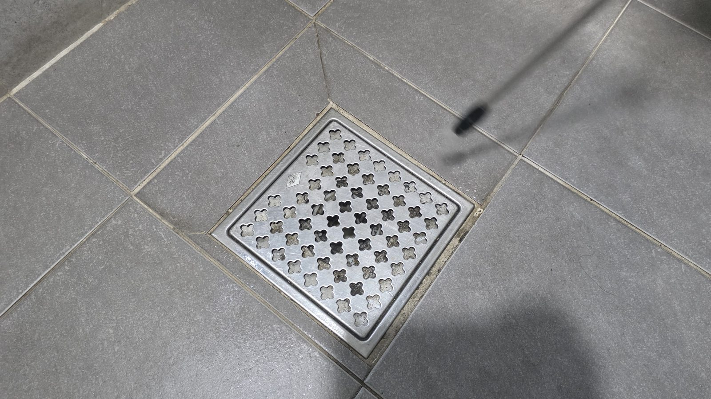
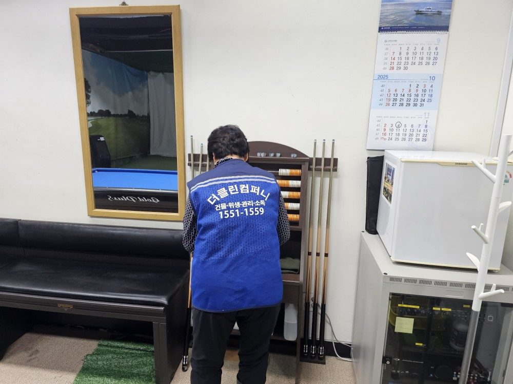
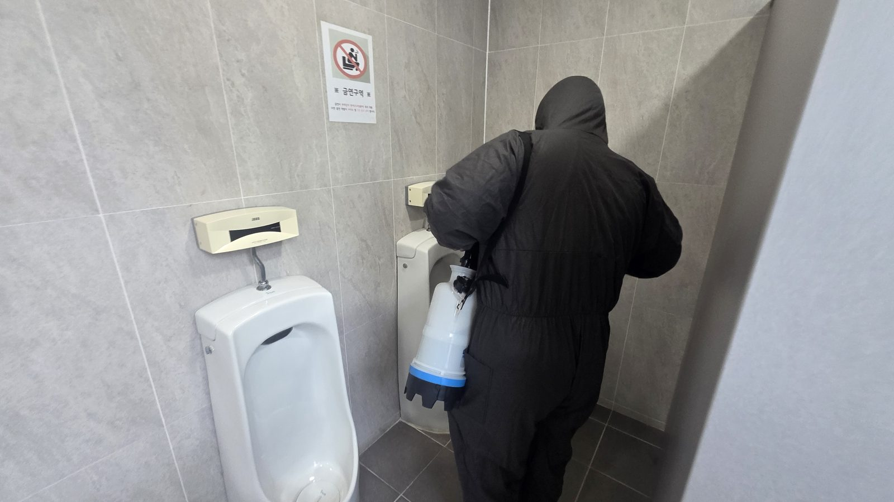
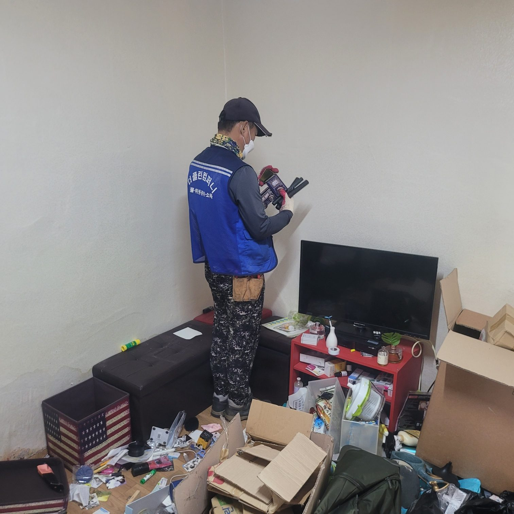
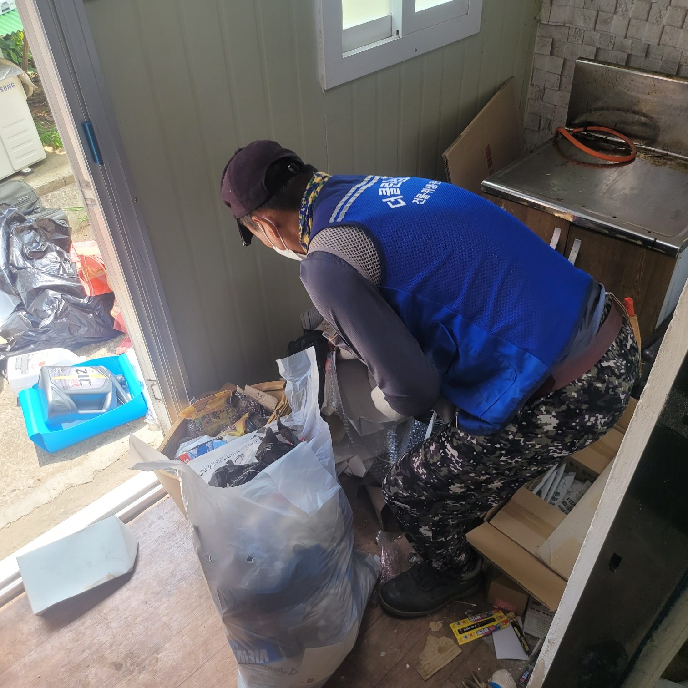
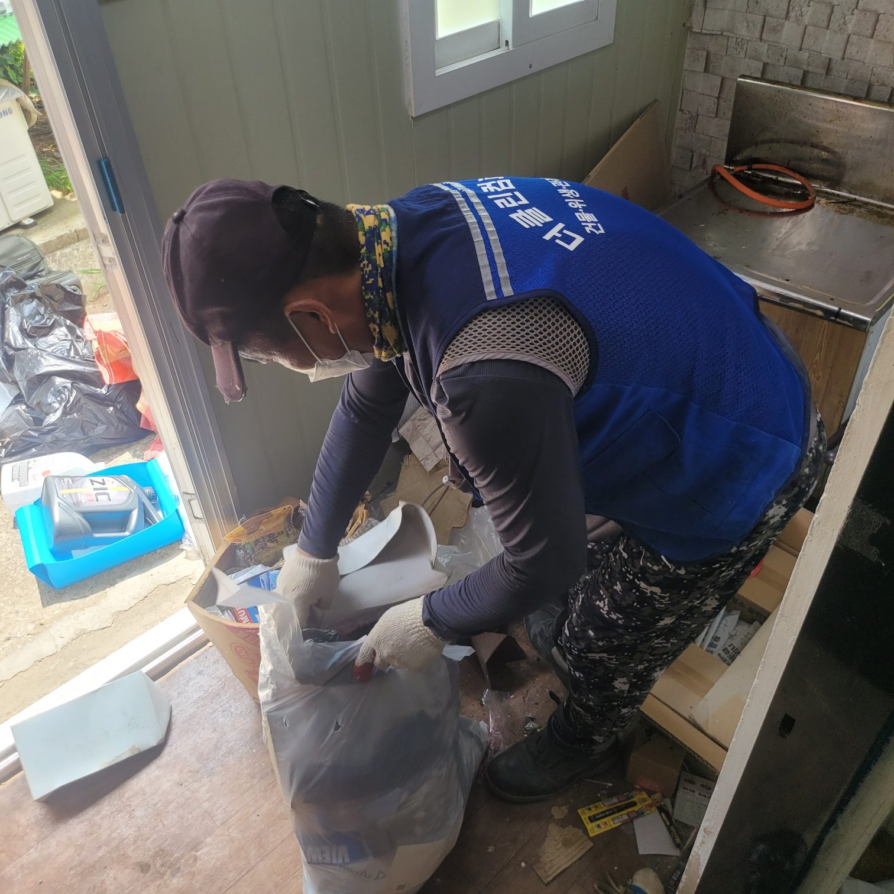
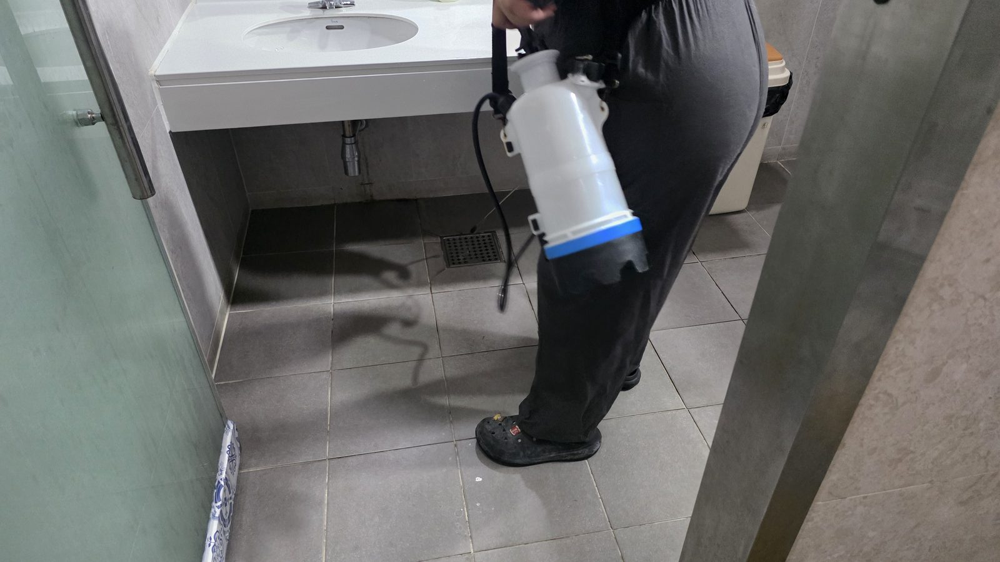
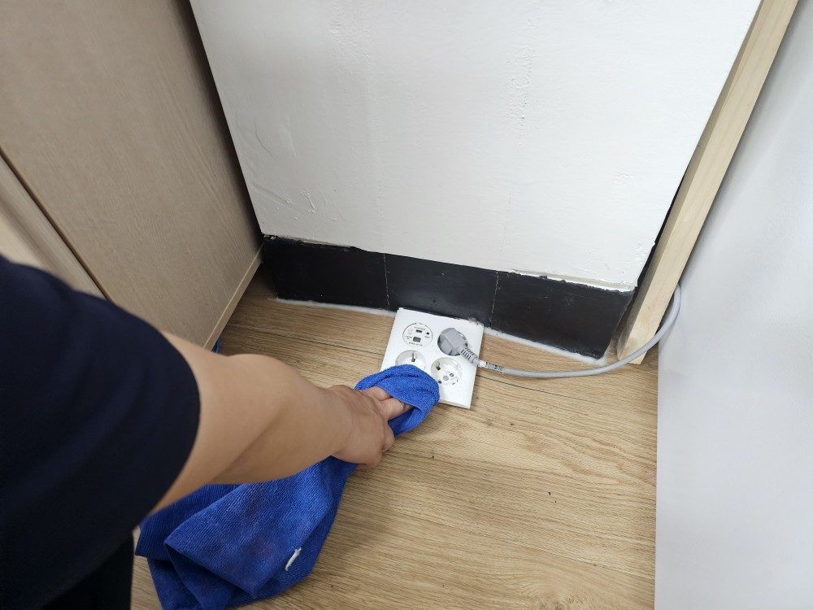

배수구와 트렌치 악취
냄새의 원인은 대부분 보이지 않는 배수 계통에 있습니다. 표면만 닦으면 며칠 만에 같은 상태로 돌아갑니다.
김포 안에서도 건물 용도와 연식에 따라 정도만 다를 뿐 원인은 비슷합니다.

냄새의 원인은 대부분 보이지 않는 배수 계통에 있습니다. 표면만 닦으면 며칠 만에 같은 상태로 돌아갑니다.

오래 비워둔 공간은 폐기물 분류부터 시작합니다. 소독과 방충까지 마쳐야 다시 쓸 수 있습니다.

화장실과 공용부는 세정만으로 부족합니다. 약품으로 중화하고 소독까지 해야 냄새가 잡힙니다.
특수청소는 무엇이 원인인지부터 확인합니다. 원인을 두고 표면만 닦으면 얼마 지나지 않아 같은 상태로 돌아갑니다.
김포 현장도 같은 절차로 진행하며, 현장 조건에 따라 장비와 보양 범위를 조정합니다.

오염 종류를 확인하고 작업자 보호구와 장비를 정합니다.

오염이 번지지 않도록 구역을 막고 폐기물을 종류별로 나눕니다.

재활용, 일반, 지정 폐기물로 나눠 적법하게 반출합니다.
배수 계통과 오염면을 고압으로 씻어내고 약품으로 중화합니다.

소독 후 충분히 건조하고 잔여 냄새를 다시 확인합니다.
김포에서는 화재 뒤 그을음과 냄새, 침수 뒤 진흙과 세균, 오래 비워둔 공간의 악취가 가장 흔한 의뢰입니다. 상가와 사무실은 영업 일정에 맞춰 야간에 진행하기도 합니다.
경기 김포시 전역으로 출장합니다. 김포 전 지역 (동 · 읍 · 면 전체) 등 김포 안쪽은 물론, 인접한 인천 · 부천 · 고양 · 파주 현장도 인천송도점이 함께 관리하고 있어 가까운 일정을 묶으면 이동 비용을 줄일 수 있습니다.
대표번호 1551-1559로 접수하시면 인천송도점 담당자에게 바로 연결됩니다. 현장 주소와 사진을 함께 보내주시면 상담이 빨라집니다.
김포 현장도 구획과 환기 경로를 먼저 정해 냄새가 옆 공간으로 퍼지지 않게 작업합니다.
현장 확인 후 항목별로 견적을 드리며, 추가 작업이 생기면 먼저 알려드리고 동의를 받은 뒤 진행합니다. 작업이 끝난 뒤에 금액이 늘어나는 일은 없습니다.
세금계산서와 완료확인서까지 갖춰 드립니다. 관공서·관급 발주에 필요한 서류는 미리 말씀해 주시면 준비합니다.
건물위생관리업과 소독업 신고를 마친 업체로, 산업안전 기준에 맞춰 장비 점검표를 작성하고 시작합니다. 점검 기록은 발주처에 함께 드립니다.
보정 없이 촬영한 실제 작업 사진입니다.

인천송도점 팀이 갑니다. 김포는 상담부터 시공까지 같은 팀이 맡아 진행하며, 인근 인천 현장도 함께 관리합니다.
오염 범위와 폐기물량에 따라 다릅니다. 현장 확인 후 일정을 먼저 알려드립니다.
마감재 속까지 밴 경우 세정만으로는 한계가 있어 일부 마감재 교체를 함께 권해 드립니다.
작업 전후 사진과 내역서를 갖춰 드립니다. 필요한 양식을 알려주시면 맞춰 작성합니다.
구획과 환기 경로를 정해 작업하고, 필요하면 음압을 걸어 진행합니다.
소독업 신고 업체라 세정과 소독을 한 번에 진행합니다.